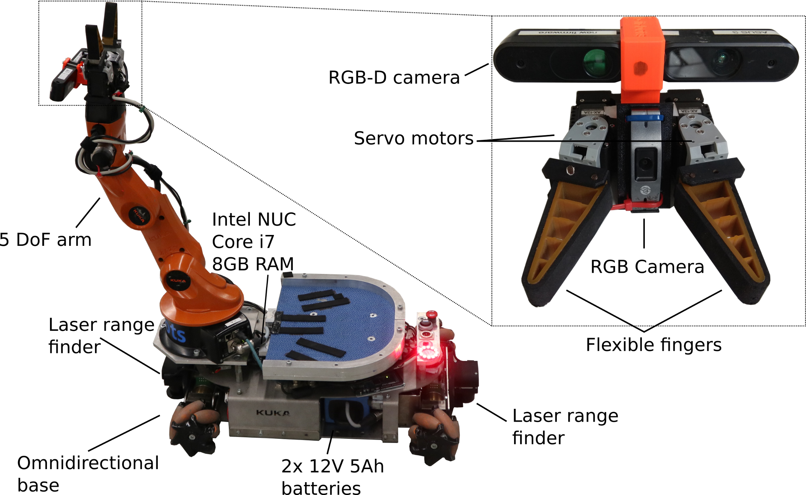
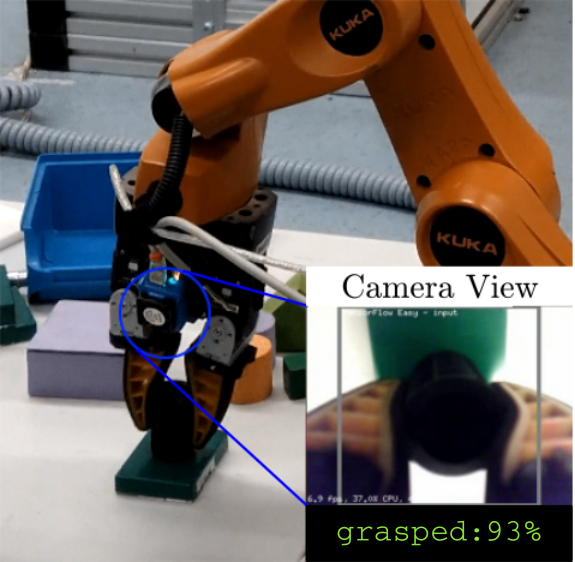
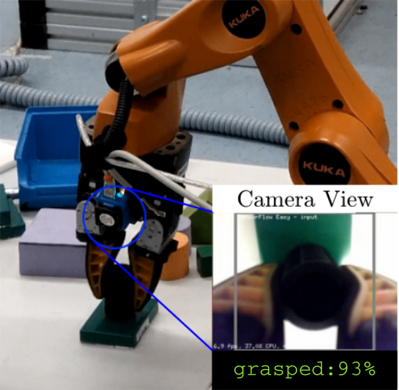

I’m a researcher at the Bonn-Aachen International Center for Information Technology (b-it) at the Autonomous Systems group in Bonn, Germany.
My research focus is on developing strategies for safe and reliable incorporation of deep learning methods into robotics.
I am also the lead develper with the b-it-bots team which won the RoboCup WorldCup and GermanOpen in the work league.
Publications
b-it-bots: Our Approach for Autonomous Robotics in Industrial Environments
Deebul Nair, Santosh Thoduka, Iman Awaad, Sven Schneider, Paul G. Plöger, Gerhard K. Kraetzschmar and students
Robot World Cup. Springer, Cham, 2019.
This paper presents the approach of our team, b-it-bots, in the RoboCup@Work competition which resulted in us winning the World Championship in Sydney in 2019. We describe our current hardware, including modifications made to the KUKA youBot, the underlying software framework and components developed for navigation, manipulation, perception and task planning for scenarios in industrial environments. Our combined 2D and 3D approach for object recognition has improved robustness and performance compared to previous years, and our task planning framework has moved us away from large state machines for high-level control. Future work includes closing the perception-manipulation loop for more robust grasping. Our open-source repository is available at https://github.com/b-it-bots/mas_industrial_robotics. {:class=“img-responsive”}
Performance Evaluation of Low-Cost Machine Vision Cameras forImage-Based Grasp Verification
Performance Evaluation of Low-Cost Machine Vision Cameras forImage-Based Grasp Verification
Under review in IROS 2020
Grasp verification is advantageous for au-tonomous manipulation robots as they provide the feedbackrequired for higher level planning components about successfultask completion. However, a major obstacle in doing graspverification is sensor selection. In this paper, we propose a visionbased grasp verification system using machine vision cameras,with the verification problem formulated as an image classifi-cation task. Machine vision cameras consist of a camera anda processing unit capable of on-board deep learning inference.The inference in these low-power hardware are done near thedata source, reducing the robots dependence on a centralizedserver, leading to reduced latency, and improved reliability.Machine vision cameras provide the deep learning inferencecapabilities using different neural accelerators. Although, it isnot clear from the documentation of these cameras what is theeffect of these neural accelerators on performance metrics suchas latency and throughput. To systematically benchmark thesemachine vision cameras, we propose a parameterized modelgenerator that generates end to end models of ConvolutionalNeural Networks(CNN). Using these generated models webenchmark latency and throughput of two machine visioncameras, JeVois A33 and Sipeed Maix Bit. Our experimentsdemonstrate that the selected machine vision camera and thedeep learning models can robustly verify grasp with 97% perframe accuracy.  {:class=“img-responsive”} {:class=“img-responsive”}
{:class=“img-responsive”} {:class=“img-responsive”}
Open Source Contributions
BayesPy – Bayesian Python
BayesPy provides tools for Bayesian inference with Python. The user constructs a model as a Bayesian network, observes data and runs posterior inference. The goal is to provide a tool which is efficient, flexible and extendable enough for expert use but also accessible for more casual users.
b-it-bots
ROS software packages of b-it-bots for different robots.